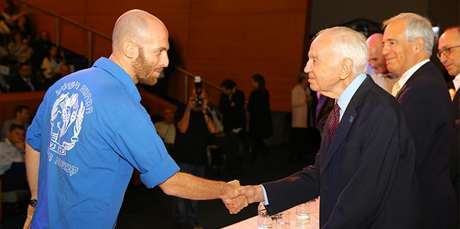

"כחבר הנהלה של המשרד זה כעשור, וכמנהל מחוז ירושלים והעיר ירושלים, יש בידי איזושהי פרספקטיבה להבין את ההשפעה של בוגרי מנדל על מערכת החינוך", אמר מאיר שמעוני, מנהל מחוז ירושלים במשרד החינוך, שייצג בטקס את משרד החינוך. "אני עד לכך שרבים וטובים ממנהיגי החינוך שלנו, לרבות מוסדות חינוך, מנהלי אגפי חינוך ומנהלי פרויקטים מובילים, הם בוגרי מכון מנדל".
שמעוני הדגיש את חשיבותן של תוכניות המכון והשותפות בין המכון למשרד החינוך: "כמי שהקים את המחוז החרדי במשרד החינוך, אני רוצה לחזק את התוכנית הייחודית למגזר החרדי. אני רואה חשיבות רבה בפיתוח המנהיגות במגזר החרדי וחיבורו לחברה הישראלית. תוכנית מנדל למנהיגות נוער משמשת פלטפורמה נהדרת לשיתוף רעיונות ומעשים בחינוך הבלתי פורמלי ולדיון באתגרים הניצבים בפניו על רקע המציאות החברתית והתרבותית בחברה הישראלית, וכן קידום שיח ושיתוף פעולה בין כלל המגזרים.

"אלה רק דוגמאות קטנות מהפעילויות החשובות והמשמעותיות של המכון ומנהיגיו," המשיך שמעוני, "לפני כשנתיים החליט המשרד בשיתוף עם מכון מנדל לערוך השתלמות מקצועית להנהלה הבכירה. השתלמות זו תרמה רבות לחשיבה שלנו כמנהלים, ונתנה לנו כלים ייחודיים וקצת שונים בראייה הניהולית מקצועית שלנו. אנשי המכון ליוו אותנו מקצועית, בצורה הרצינית והמעמיקה ביותר. חוות הדעת שהועברו בתום ההשתלמות מעידות על חשיבותו ותרומתו של המכון."
בטקס, שנערך ב-30 באוקטובר במרכז מורשת מנחם בגין בירושלים, סיימו את לימודיהם במכון עמיתי תוכניות מנדל למנהיגות חינוכית בצה"ל – קצינים בכירים מכל חילות הצבא; 20 עמיתי מחזור ג' בתוכנית מנדל לפיתוח מנהיגות בקהילה החרדית; ו-20 עמיתי מחזור ב' בתוכנית מנדל למנהיגות נוער – מנהיגים מקרב הסגל הבכיר של תנועות הנוער בישראל.
"המשותף בין תפיסת התוכנית לגישתו של צה"ל נעוץ בהבנה שיש חשיבות בהשקעה בפיתוח מפקדים בעלי גישה חינוכית חברתית כחלק מחיזוק חוסנו של צה"ל כצבא ממלכתי, צבא העם במדינה יהודית דמוקרטית", אמר קצין החינוך הראשי בצה"ל, תא"ל צביקה פייראיזן. "אני בטוח ביכולתכם לעשות שימוש מושכל בתשתית הידע שצברתם בשנה זו. אנו בצה"ל מצפים לכך שתובילו ותתרמו מהידע שצברתם ביחידות השונות בצבא", אמר לבוגרים.
סיום השנה צוין גם בבית ספר מנדל למנהיגות חינוכית – מיזם משותף לקרן מנדל ולמשרד החינוך שנוסד ב-1991. 19 עמיתי מחזור כ''ד סיימו שנתיים של לימודים שבהם עסקו בסוגיות המרכזיות בתחום החינוך, המנהיגות והחברה בישראל.
"הגמול הגדול ביותר שלנו הוא שאולי עזרנו למי מכם שמסיימים היום להיות טובים עוד יותר", אמר יו"ר קרן מנדל,
מר מורטון מנדל לבוגרים הטריים. "בחרנו להשקיע בבני אדם, בגלל אמונתנו העמוקה שהסוד טמון באנשים. אתם ההוכחה החיה שצדקנו, אחיי ואני. אני גאה בכם מאוד", אמר.
{kind=link}